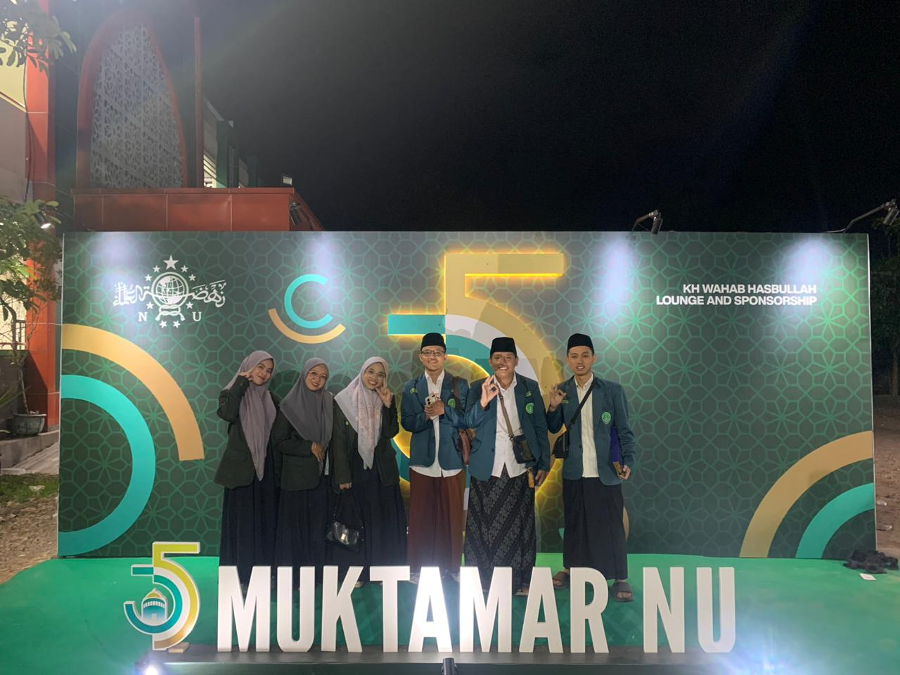

Kumpulan kabar terbaru, laporan kegiatan mendalam, serta pers rilis resmi dari Pimpinan Cabang IPNU-IPPNU Kota Blitar.
Arsip Warta Utama
Semua Berita & Liputan Khusus
Nasional

Hadir Penuh Khidmat, Jajaran PC IPNU-IPPNU Kota Blitar Ikuti Rangkaian Muktamar Nahdlatul Ulama
28 Agustus 2026 · Tim Media
Membawa semangat kebersamaan kader muda Blitar, pengurus cabang hadir langsung di panggung nasional...
Baca Selengkapnya →
Kaderisasi
Perkuat Basis Pelajar Sekolah, PC IPNU-IPPNU Kota Blitar Matangkan Agenda MAKESTA & Reaktivasi PK SMK Islam 1 Blitar
28 Agustus 2026 · Tim Media
Langkah koordinasi matangkan persiapan pengkaderan formal dan reaktivasi komisariat di SMK Islam 1 Blitar...
Baca Selengkapnya →
Konsolidasi
Merajut Sinergi Organisasi, RAPIMCAB & RAKORCAB PC IPNU-IPPNU Kota Blitar Sukses Satukan Visi Perjuangan
20 Februari 2026 · Tim Media
Forum evaluasi strategis satukan langkah pengurus harian dan PAC demi optimalisasi program kerja daerah...
Baca Selengkapnya →
Pendidikan
Menanam Benih Moderasi Beragama, PC IPNU-IPPNU Bekali Ratusan Siswa Baru STMI Lewat Materi Aswaja
Juli 2026 · Tim Media
Hadir di tengah MPLS STMI Kota Blitar, kader IPNU-IPPNU sukses inspirasi siswa lewat pendekatan interaktif...
Baca Selengkapnya →
Liputan Khusus Nasional & Muktamar NU
Hadir Penuh Khidmat, Jajaran PC IPNU-IPPNU Kota Blitar Ikuti Rangkaian Muktamar Nahdlatul Ulama
TM
Tim Media PC IPNU-IPPNU Kota Blitar
📍 Arena Muktamar Nasional | 📅 10 September 2026
🔍 Klik untuk Buka Foto Penuh
Dokumentasi Kehadiran Jajaran Pengurus PC IPNU-IPPNU Kota Blitar di Arena Muktamar Nahdlatul Ulama
KOTA BLITAR / ARENA MUKTAMAR — Perhelatan akbar Muktamar Nahdlatul Ulama yang mempertemukan jutaan umat Islam serta warga Nahdliyin dari berbagai penjuru nusantara kembali mencatatkan momen bersejarah yang sarat makna. Jajaran pengurus Pimpinan Cabang (PC) Ikatan Pelajar Nahdlatul Ulama (IPNU) dan Ikatan Pelajar Putri Nahdlatul Ulama (IPPNU) Kota Blitar turut hadir secara langsung di lokasi acara dengan penuh rasa takzim dan khidmat mengikuti seluruh rangkaian kegiatan muktamar.
Kehadiran para pengurus cabang di arena muktamar ini didasari oleh niat kuat untuk bersilaturahmi, menyerap energi perjuangan para ulama, serta menyaksikan secara langsung proses permusyawaratan tertinggi organisasi. Sebagai bagian dari banom NU yang fokus pada pembinaan pelajar, momen ini dimanfaatkan untuk memperluas wawasan kebangsaan serta memperkuat komitmen pengabdian kepada jam'iyah.
Suasana di sekitar arena muktamar tampak begitu meriah dipadati oleh lautan manusia berbusana Muslim serta atribut kebesaran Nahdlatul Ulama. Gema shalawat dan lantunan ayat suci Al-Qur'an terdengar silih berganti mengiringi langkah para peserta yang antusias mengikuti jalannya sidang pleno maupun berbagai agenda pendukung yang disiapkan oleh panitia nasional.
Bagi rombongan asal Kota Blitar, kesempatan ini memberikan banyak pelajaran berharga mengenai dinamika organisasi skala besar. Nilai-nilai kesabaran, musyawarah untuk mufakat, serta ketawadukan para kiai sepuh dalam merumuskan solusi keumatan menjadi teladan nyata yang dapat diserap dan diterapkan dalam mengelola roda kepengurusan di tingkat daerah.
"Kehadiran kami di muktamar ini adalah wujud kecintaan dan khidmat kepada para kiai serta jam'iyah Nahdlatul Ulama. Semoga semangat perjuangan yang kami saksikan di sini dapat menular dan membakar semangat kader-kader muda di Kota Blitar." — Tim Media PC IPNU-IPPNU Kota Blitar.
Di sela-sela kegiatan utama, pengurus cabang juga menyempatkan diri untuk berdiskusi santai dengan kader-kader muda dari berbagai daerah lain guna bertukar pengalaman seputar program kerja dan strategi pengembangan komisariat di sekolah maupun madrasah. Pertukaran gagasan ini dinilai sangat positif untuk memperkaya referensi pengelolaan organisasi ke depan.
Setelah rangkaian acara muktamar rampung dilaksanakan, seluruh rombongan kembali pulang ke Blitar dengan membawa segudang pengalaman serta motivasi baru untuk meningkatkan kualitas gerakan pelajar Nahdliyin di daerah. Semangat kebersamaan yang terjalin selama di arena diharapkan mampu mempererat solidaritas antar pengurus.
Pihak pengurus menyampaikan terima kasih kepada seluruh pihak yang telah mendukung kelancaran perjalanan serta kehadiran mereka dalam perhelatan akbar tersebut. Dukungan moral dan doa dari warga Nahdliyin Kota Blitar menjadi kekuatan utama dalam menjalankan amanah organisasi dengan sebaik-baiknya.
Perkuat Basis Pelajar Sekolah, PC IPNU-IPPNU Kota Blitar Matangkan Agenda MAKESTA & Reaktivasi PK SMK Islam 1 Blitar
TM
Tim Media PC IPNU-IPPNU Kota Blitar
📍 Kota Blitar | 📅 28 Agustus 2026
🔍 Klik untuk Buka Foto Penuh
Dokumentasi Rapat Koordinasi Pembahasan Rencana MAKESTA dan Reaktivasi PK IPNU-IPPNU SMK Islam 1 Blitar
KOTA BLITAR — Pimpinan Cabang (PC) Ikatan Pelajar Nahdlatul Ulama (IPNU) dan Ikatan Pelajar Putri Nahdlatul Ulama (IPPNU) Kota Blitar terus berupaya memperkuat basis kaderisasi di lingkungan sekolah menengah. Bertempat di ruang koordinasi, jajaran pengurus harian bersama tim kaderisasi melaksanakan rapat intensif guna mematangkan persiapan pelaksanaan Masa Kesetiaan Anggota (MAKESTA) sekaligus reaktivasi Pimpinan Komisariat (PK) IPNU-IPPNU di SMK Islam 1 Blitar.
Berdasarkan hasil musyawarah dan koordinasi bersama pihak terkait, pelaksanaan pengkaderan formal tingkat dasar (MAKESTA) di SMK Islam 1 Blitar dijadwalkan akan dihelat pada tanggal 11 hingga 12 September mendatang. Kegiatan ini dirancang berlangsung mulai pukul 13.00 WIB hingga selesai setiap harinya, bertempat langsung di kompleks sekolah SMK Islam 1 Blitar. Estimasi peserta yang akan ambil bagian berkisar antara 30 hingga 50 orang pelajar.
Langkah reaktivasi ini dinilai penting untuk segera direalisasikan mengingat masa khidmat kepengurusan komisariat sebelumnya telah berakhir. Dalam masa transisi menuju pembentukan struktur definitif yang baru, pelaksanaan MAKESTA dan pembinaan awal peserta didik akan dikoordinasikan secara langsung di bawah naungan Pimpinan Anak Cabang (PAC) Kepanjenkidul guna menjaga kesinambungan organisasi.
Dari hasil pendataan awal yang dilakukan oleh tim perumus, tercatat adanya potensi kader yang cukup aktif di sekolah tersebut, yang terdiri dari pelajar putra maupun pelajar putri. Sebagian peserta juga dipersiapkan untuk mengikuti tahap pengkaderan formal agar kelak siap mengemban tanggung jawab sebagai pengurus komisariat yang baru di lingkungan sekolah.
"Reaktivasi komisariat sekolah adalah bagian penting dari kesinambungan kaderisasi Nahdlatul Ulama. Melalui MAKESTA di SMK Islam 1 Blitar ini, kami berupaya membimbing para pelajar agar memiliki pemahaman keislaman yang moderat serta semangat berorganisasi yang baik." — Tim Media PC IPNU-IPPNU Kota Blitar.
Guna memastikan keberlanjutan pembinaan pasca-pelatihan, tim pendamping cabang nantinya juga akan membantu melakukan pemetaan zonasi domisili para siswa. Langkah ini diambil agar pelajar yang bersekolah di SMK Islam 1 Blitar namun bertempat tinggal di luar rayon sekolah dapat terhubung dengan Pimpinan Ranting (PR) atau Pimpinan Anak Cabang (PAC) sesuai wilayah tempat tinggal mereka masing-masing.
Dengan adanya koordinasi yang baik antara pihak sekolah dan pengurus cabang, diharapkan proses pembinaan kader muda dapat berjalan secara lancar tanpa hambatan berarti. Sinergi ini juga mendapat sambutan positif dari berbagai pihak yang peduli terhadap perkembangan aktivitas positif di kalangan pelajar sekolah.
Pihak pengurus cabang mengajak seluruh kader untuk turut mendoakan kelancaran dan kesuksesan agenda MAKESTA di SMK Islam 1 Blitar. Dukungan dari para guru serta pembina sekolah menjadi salah satu faktor penentu tercapainya tujuan pembinaan karakter bagi para siswa di lingkungan sekolah.
Merajut Sinergi Organisasi, RAPIMCAB & RAKORCAB PC IPNU-IPPNU Kota Blitar Sukses Satukan Visi Perjuangan
TM
Tim Media PC IPNU-IPPNU Kota Blitar
📍 Kota Blitar | 📅 20 Februari 2026
🔍 Klik untuk Buka Foto Penuh
Dokumentasi Rapat Pimpinan Cabang & Rapat Koordinasi Cabang PC IPNU-IPPNU Kota Blitar
KOTA BLITAR — Suasana penuh kebersamaan tampak mendominasi ruang rapat kantor sekretariat Pimpinan Cabang (PC) Ikatan Pelajar Nahdlatul Ulama (IPNU) dan Ikatan Pelajar Putri Nahdlatul Ulama (IPPNU) Kota Blitar. Agenda rutin organisasi yakni Rapat Pimpinan Cabang (RAPIMCAB) dan Rapat Koordinasi Cabang (RAKORCAB) resmi digelar dengan menghadirkan pengurus harian serta perwakilan pimpinan anak cabang se-Kota Blitar.
Pelaksanaan forum strategis ini berfungsi sebagai sarana evaluasi tengah periode kepengurusan serta wadah untuk menyamakan persepsi dalam menjalankan program kerja. Di tengah berbagai tantangan zaman yang dinamis, organisasi pelajar dituntut untuk terus adaptif dan mampu memberikan solusi nyata bagi kebutuhan para pelajar di tingkat lokal.
Acara pembukaan diawali dengan menyanyikan lagu kebangsaan Indonesia Raya dan Mars Subbanul Wathan yang diikuti oleh seluruh peserta dengan khidmat. Kehadiran para pembina serta sesepuh turut memberikan pengarahan agar para pengurus muda senantiasa menjaga semangat keikhlasan dalam berorganisasi dan berkhidmat kepada masyarakat.
Dalam sesi sidang pleno, masing-masing bidang menyampaikan laporan perkembangan program kerja yang telah berjalan serta mendiskusikan kendala teknis di lapangan. Setiap perwakilan anak cabang juga diberikan kesempatan untuk menyampaikan masukan serta usulan program baru yang disesuaikan dengan kebutuhan kader di wilayah masing-masing.
"Konsolidasi organisasi sangat penting untuk merawat kebersamaan dan menyatukan langkah. Melalui forum RAPIMCAB dan RAKORCAB ini, kita berharap program kerja kedepan bisa lebih optimal dirasakan oleh seluruh pelajar." — Tim Media PC IPNU-IPPNU Kota Blitar.
Hasil penting yang disepakati dalam pertemuan tersebut meliputi peningkatan koordinasi administrasi antar tingkatan kepengurusan serta penguatan kegiatan pendampingan pelajar di sekolah-sekolah. Sistem pelaporan kegiatan juga disederhanakan agar proses komunikasi antara pengurus cabang dan anak cabang dapat berjalan lebih cepat dan efisien.
Menjelang penutupan acara, pimpinan sidang membacakan hasil keputusan rapat serta poin-poin penting yang harus segera ditindaklanjuti oleh seluruh jajaran pengurus. Peserta menyambut hasil musyawarah tersebut dengan komitmen bersama untuk menyukseskan seluruh agenda organisasi hingga akhir masa khidmat.
Dengan terselenggaranya kegiatan RAPIMCAB dan RAKORCAB ini, diharapkan soliditas internal pengurus PC IPNU-IPPNU Kota Blitar semakin terjaga dengan baik. Langkah ini menjadi modal utama dalam melanjutkan khidmat pengabdian kepada pelajar dan masyarakat luas di Kota Blitar.
Menanam Benih Moderasi Beragama, PC IPNU-IPPNU Bekali Ratusan Siswa Baru STMI Lewat Materi Aswaja
TM
Tim Media PC IPNU-IPPNU Kota Blitar
📍 STMI Kota Blitar | 📅 Juli 2026
🔍 Klik untuk Buka Foto Penuh
Dokumentasi Kegiatan Pengisian Materi MPLS oleh PC IPNU-IPPNU di STMI Kota Blitar
KOTA BLITAR — Rangkaian kegiatan Masa Pengenalan Lingkungan Sekolah (MPLS) di STMI Kota Blitar pada tahun ajaran baru ini diisi dengan berbagai program pembinaan karakter bagi para siswa baru. Pimpinan Cabang (PC) Ikatan Pelajar Nahdlatul Ulama (IPNU) dan Ikatan Pelajar Putri Nahdlatul Ulama (IPPNU) Kota Blitar berkesempatan hadir untuk memberikan pembekalan materi tentang wawasan kebangsaan dan dasar pemahaman agama yang moderat.
Kehadiran tim pemateri dari pengurus cabang disambut baik oleh pihak sekolah serta diikuti dengan antusias oleh ratusan peserta didik baru. Dalam sesi penyampaian materi, pemateri menekankan pentingnya menumbuhkan sikap toleransi, menghargai perbedaan, serta mencintai tanah air sebagai bagian dari pengamalan nilai-nilai keislaman yang rahmatan lil 'alamin.
Penyampaian materi dikemas secara interaktif dan santai agar mudah dipahami oleh para remaja yang baru memasuki lingkungan sekolah tingkat lanjutan. Diskusi ringan serta tanya jawab interaktif turut menghidupkan suasana ruangan sehingga para siswa aktif berpartisipasi menyimak penjelasan yang diberikan.
Pihak sekolah menyampaikan apresiasi atas kesediaan pengurus PC IPNU-IPPNU Kota Blitar yang telah meluangkan waktu untuk berbagi pengetahuan dan membimbing para siswa baru. Kegiatan semacam ini dinilai sangat membantu pihak sekolah dalam menanamkan kedisiplinan serta budi pekerti yang luhur kepada peserta didik sejak awal masa orientasi.
"Pengenalan lingkungan sekolah adalah awal yang baik untuk membentuk karakter positif para siswa. Melalui pembekalan nilai moderasi beragama ini, kami berharap para siswa baru dapat tumbuh menjadi generasi yang cerdas dan berakhlakul karimah." — Tim Media PC IPNU-IPPNU Kota Blitar.
Selain materi keagamaan dan kebangsaan, para pengurus juga memperkenalkan kegiatan ekstrakurikuler pelajar NU sebagai wadah positif bagi siswa untuk mengembangkan minat, bakat, serta kemampuan kepemimpinan di lingkungan sekolah. Berbagai kegiatan positif dipaparkan untuk memotivasi siswa agar aktif berorganisasi.
Acara ditutup dengan sesi foto bersama serta penyerahan cinderamata antara pihak pengurus cabang dan pihak sekolah sebagai bentuk kerja sama yang harmonis dalam dunia pendidikan. Para siswa tampak antusias mengikuti seluruh rangkaian kegiatan hingga selesai.
Melalui kegiatan roadshow pengenalan semacam ini, PC IPNU-IPPNU Kota Blitar berkomitmen untuk terus hadir mendampingi para pelajar di berbagai sekolah. Langkah ini diharapkan mampu memberikan dampak positif yang berkelanjutan bagi pembinaan generasi muda di Kota Blitar.